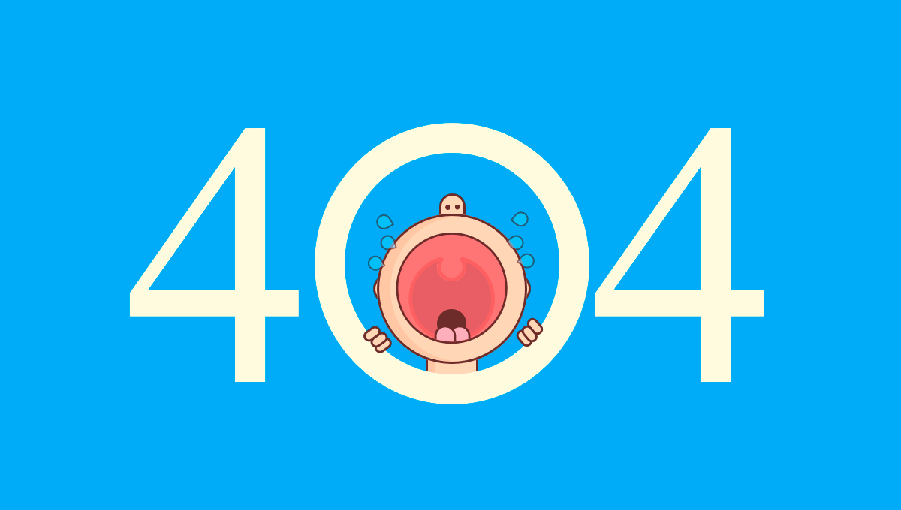

<main>
  <div class="position-relative">
    <section class="section section-lg section-hero section-shaped">
      <!-- Background circles -->

      <div class="shape shape-style-1 bg-gradient-info">

      </div>
      <div class="container shape-container d-flex align-items-center py-lg">
        <div class="col px-0">
          <div class="row align-items-center justify-content-center">
            <div class="col-lg-6 text-center">
              
              <p class="display-4 text-white"><strong>Oops...The page you're looking for is not there... </strong></p>
              <a class="link page-link link" [routerLink]="['/home']"><strong>Goto Home</strong></a>
            </div>
          </div>
        </div>
      </div>
      <!-- SVG separator -->
      <!--<div class="separator separator-bottom separator-skew zindex-100">
        <svg x="0" y="0" viewBox="0 0 2560 100" preserveAspectRatio="none" version="1.1"
             xmlns="http://www.w3.org/2000/svg">
          <polygon class="fill-white" points="2560 0 2560 100 0 100"></polygon>
        </svg>
      </div>-->
    </section>
  </div>
</main>
